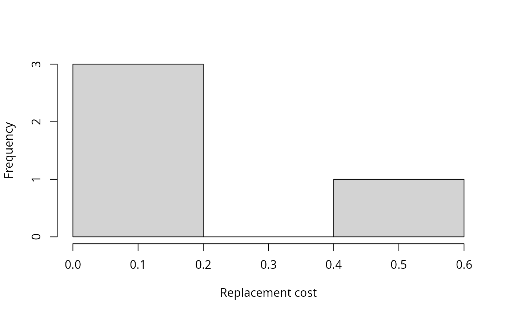

Calculate the replacement cost for priority actions in a project prioritization problem (Moilanen et al. 2009). Actions associated with larger replacement cost values are more irreplaceabe, and may need to be implemented sooner than actions with lower replacement cost values.
replacement_costs(x, solution, n = 1)
| x | project prioritization |
|---|---|
| solution |
|
| n |
|
A tibble table containing the following
columns:
"action"character name of each action.
"cost"numeric cost of each solution when each
action is locked out.
"obj"numeric objective value of each solution when
each action is locked out. This is calculated using the objective
function defined for the argument to x.
"rep_cost"numeric replacement cost for each
action. Greater values indicate greater irreplaceability. Missing
(NA) values are assigned to actions which are not selected for
funding in the specified solution, infinite (Inf) values are
assigned to to actions which are required to meet feasibility
constraints, and negative values mean that superior solutions than
the specified solution exist.
Replacement cost values are calculated for each priority action
specified in the solution. Missing (NA) values are assigned to
actions which are not selected for funding in the specified solution.
For a given action, its replacement cost is calculated by
(i) calculating the objective value for the optimal solution to
the argument to x, (ii) calculating the objective value for the
optimal solution to the argument to x with the given action locked
out, (iii) calculating the difference between the two objective
values, (iv) the problem has an objective which aims to minimize
the objective value (only add_min_set_objective, then
the resulting value is multiplied by minus one so that larger values
always indicate actions with greater irreplaceability. Please note this
function can take a long time to complete
for large problems since it involves re-solving the problem for every
action selected for funding.
Moilanen A, Arponen A, Stokland JN & Cabeza M (2009) Assessing replacement cost of conservation areas: how does habitat loss influence priorities? Biological Conservation, 142, 575--585.
# load data data(sim_projects, sim_features, sim_actions) # build problem with maximum richness objective and $400 budget p <- problem(sim_projects, sim_actions, sim_features, "name", "success", "name", "cost", "name") %>% add_max_richness_objective(budget = 400) %>% add_feature_weights("weight") %>% add_binary_decisions() # solve problem s <- solve(p)#> Gurobi Optimizer version 9.0.1 build v9.0.1rc0 (linux64) #> Optimize a model with 47 rows, 47 columns and 102 nonzeros #> Model fingerprint: 0x5daec544 #> Variable types: 0 continuous, 42 integer (42 binary) #> Semi-Variable types: 5 continuous, 0 integer #> Coefficient statistics: #> Matrix range [9e-02, 1e+02] #> Objective range [2e-01, 2e+00] #> Bounds range [1e+00, 1e+00] #> RHS range [1e+00, 4e+02] #> Found heuristic solution: objective 0.6654645 #> Presolve removed 16 rows and 12 columns #> Presolve time: 0.00s #> Presolved: 31 rows, 35 columns, 64 nonzeros #> Variable types: 0 continuous, 35 integer (35 binary) #> Presolved: 31 rows, 35 columns, 64 nonzeros #> #> #> Root relaxation: objective 1.749045e+00, 11 iterations, 0.00 seconds #> #> Nodes | Current Node | Objective Bounds | Work #> Expl Unexpl | Obj Depth IntInf | Incumbent BestBd Gap | It/Node Time #> #> * 0 0 0 1.7490448 1.74904 0.00% - 0s #> #> Explored 0 nodes (11 simplex iterations) in 0.00 seconds #> Thread count was 1 (of 4 available processors) #> #> Solution count 1: 1.74904 #> #> Optimal solution found (tolerance 0.00e+00) #> Best objective 1.749044775334e+00, best bound 1.749044775334e+00, gap 0.0000%#> # A tibble: 1 x 21 #> solution status obj cost F1_action F2_action F3_action F4_action F5_action #> <int> <chr> <dbl> <dbl> <dbl> <dbl> <dbl> <dbl> <dbl> #> 1 1 OPTIM~ 1.75 395. 1 1 0 1 1 #> # ... with 12 more variables: baseline_action <dbl>, F1_project <dbl>, #> # F2_project <dbl>, F3_project <dbl>, F4_project <dbl>, F5_project <dbl>, #> # baseline_project <dbl>, F1 <dbl>, F2 <dbl>, F3 <dbl>, F4 <dbl>, F5 <dbl>#> # A tibble: 6 x 4 #> name cost obj rep_cost #> <chr> <dbl> <dbl> <dbl> #> 1 F1_action 300. 1.64 0.108 #> 2 F2_action 397. 1.70 0.0458 #> 3 F3_action NA NA NA #> 4 F4_action 399. 1.56 0.192 #> 5 F5_action 398. 1.18 0.569 #> 6 baseline_action Inf Inf -Inf# plot histogram of replacement costs, # with this objective, greater values indicate greater irreplaceability hist(r$rep_cost, xlab = "Replacement cost", main = "")